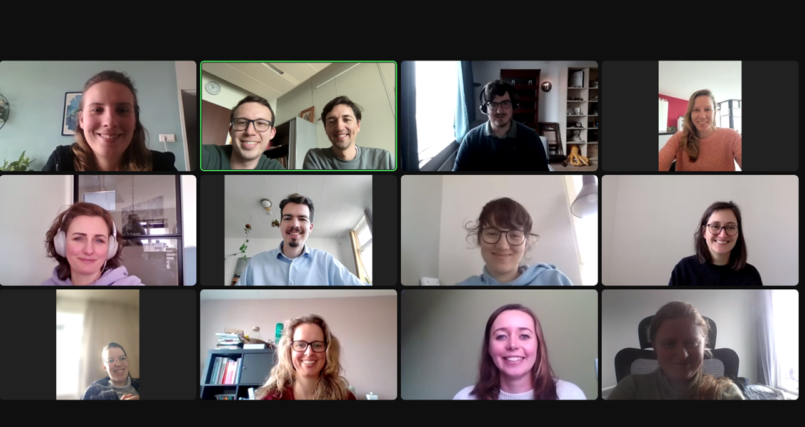
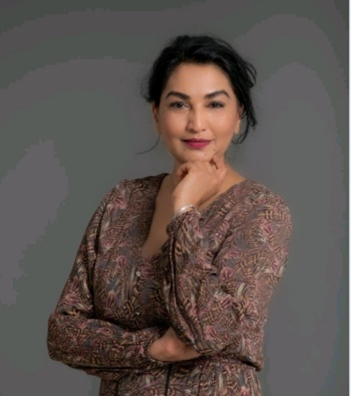
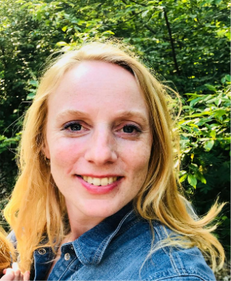
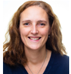

Roeland Bik; Laurens Dijkgraaf; Bianca de Jong- Schmit; Christine Kers-Van Seters;
Manouk Schreuder; Denise Sluiter; Eline van der Stoep; Cynthia van Vliet; Susanne Wilhelm;
Mette Doesburg; Hedwig van Wijk; Lars Druiven, Betty van Persie; Lidia Bons;
Lisette Verkerk; Birgit Lavrijssen; Samantha Donkel; Iris Schouten; Ralph van Mazijk;
Dirk Hoogenkamp; Jorn Goet.

Als JVT is het onze missie om de stem van de AIOS te vertegenwoordigen binnen de opleiding. Hiervoor is de inbreng vanuit iedere AIOS-groep hard nodig. Deze inbreng nemen we als JVT mee in de vergaderingen met het MT. We proberen hiermee de verbinding te zijn tussen de AIOS en de opleiding. Zo vormen we een constructieve samenwerkingspartner en klankbord voor het opleidingsinstituut met als doel de opleiding tot specialist ouderengeneeskunde samen verder te ontwikkelen en verbeteren.
Het afgelopen jaar zijn we binnen de JVT op zoek gegaan naar een nieuwe werkvorm waarbij we van een reactieve structuur over willen stappen naar een proactieve vorm. Dit betekent dat de JVT zelfstandig vergadert over verschillende onderwerpen en adviezen uitbrengt naar het MT. Ook gaat de JVT zich organiseren in verschillende subcommissies die aansluiten bij het MT (Beleid & Kwaliteit, Onderwijs, Praktijk, Communicatie). Verder hebben de JVT verder gedigitaliseerd: er is een centrale email voor contact met JVT gekomen JVT@lumc.nl en worden afspraken en samenwerken bestendigd op een gezamenlijk platform in TEAM's. Hiermee hopen we verder te professionaliseren als samenwerkingspartner met SOOL.
De JVT speelt ook een rol in communicatie naar de AIOS ten aanzien van de ontwikkelingen binnen de opleiding. Vragen vanuit de AIOS kunnen via de JVT bij het MT van de opleiding komen. Via de notulen, welke na elke vergadering op Brightspace terug te vinden zijn, is te zien wat besproken is tijdens de vergaderingen.
De opleidersvertegenwoordigers
Samen met onderstaande collega's vormen wij de opleidersvertegenwoordiging. Wij vinden het belangrijk dat er een optimale samenwerking is tussen opleiders en het opleidingsinstituut. Dit komt het leerklimaat ten goede en er kan snel geschakeld worden als er minder voortgang is dan verwacht. Ook vinden we het belangrijk dat nieuwe opleiders snel vertrouwd raken in hun rol en op de hoogte zijn van de praktische zaken. Voor tips, opmerkingen of vragen over de inhoud en de vormgeving van de opleiding, opleiders dagen of ander onderwerpen kun je bij ons terecht middels mail of door op de opleidersdagen ons te treffen.
 Sjhagru@wzh.nl
Ik ben Shirin Ghafoerkhan, Specialist Ouderengeneeskunde, sinds 2012 opleider en sinds 2021 Kaderarts eerste lijn in Den Haag en werkzaam bij Woonzorgcentra Haaglanden (WZH). Samen met mijn collega opleiders geven wij binnen onze organisatie vorm aan de opleiding van Specialist Ouderengeneeskunde, Huisarts, Physician Assistant (PA) en Verpleegkundig Specialist (VS) intramuraal, GRZ en in de eerste lijn.
 h.korbee@pietervanforeest.nl
Ik ben Hester Korbee en sinds 2014 werkzaam als opleider. Ik werk in de Pieter van Foreest in het Westland. Sinds 2018 hebben wij een opleidingsgroep. Als hoofdopleider ben ik betrokken bij meerdere AIOS in verschillende fases van hun opleiding. Verder denken we als opleiders na over de visie op opleiden en proberen we dit in te bedden in onze organisatie.
r.van.hevele@svrz.nl
Mijn naam is Renée van Hevele en sinds 2021 ben ik opleider bij de SVRZ regio Zeeuws- Vlaanderen in Axel. Nog niet zo lang wordt er in mijn regio opgeleid, er was nood aan een opleider voor een aio’s. Omdat ik altijd al huisartsen in opleiding had was dit een logische stap.
Persoonlijke ontwikkeling, samenwerken en verbinden; aioto-schap en
wetenschapsmentor bij SOOL

Milly van der Ploeg, docent-specialist oudereneneeskunde
Ik ben Milly van der Ploeg, als AIOTO combineerde ik de opleiding tot SO met een promotietraject. De opleiding tot SO heb ik april 2022 afgerond en ik ben nu bezig met de laatste fase van mijn promotietraject. Mijn proefschrift gaat over de ‘appropriateness’ en het stoppen van statines bij de oudste ouderen. ‘Appropriateness’ is een Engels woord dat zich moeilijk laat vertalen in het Nederlands, maar heeft te maken met de geschiktheid, of hoe passend iets is. De ‘afrondende fase’ houdt in dat de publicaties (zo goed als) af zijn, en ik de eerste versie de van de inleiding en discussie van mijn boekje bij mijn promotieteam heb ingeleverd. Het schrijven van de discussie was een hele klus, maar het was ook leuk om na een traject van circa 6 jaar te reflecteren op het verrichte werk, en na te denken over vragen als ‘Wat hebben de onderzoeksprojecten ons geleerd?, en ‘ Wat betekenen de bevindingen voor de praktijk’? Binnenkort gaat het hele setje naar een leescommissie, en daarna kan de verdediging gepland gaan worden!
Sinds 1 december 2022 ben ik werkzaam als wetenschapsmentor bij SOOL. Ik ben zeer hartelijk ontvangen, en werk samen in een heel leuk en enthousiast team. Het is erg fijn en verfrissend om op een andere manier bezig te zijn met wetenschap. Het werk als wetenschapsmentor inspireert en motiveert mij om de laatste loodjes van het promotietraject af te ronden. Ik lees met plezier de CATs en onderzoeksvoorstellen van de AIOS, spar met mijn SOOL collega’s over wetenschappelijke vragen en deel ervaringen. Samen denken we na over hoe we ons enthousiasme voor wetenschap aan de AIOS kunnen overdragen, en hoe we wetenschap nog beter met de praktijk kunnen verbinden.